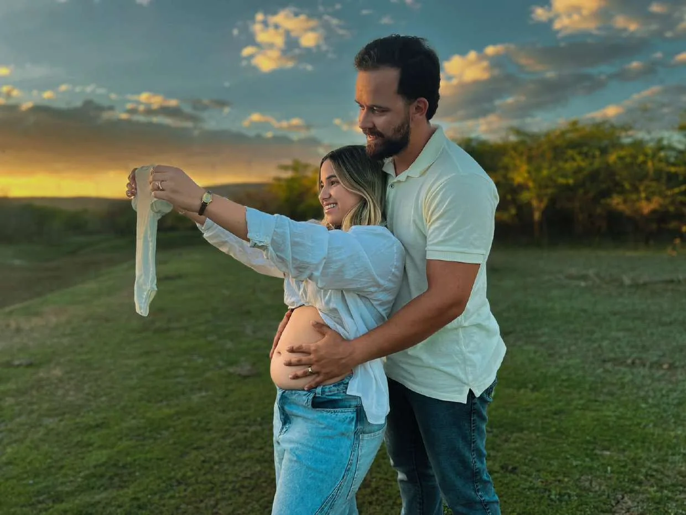
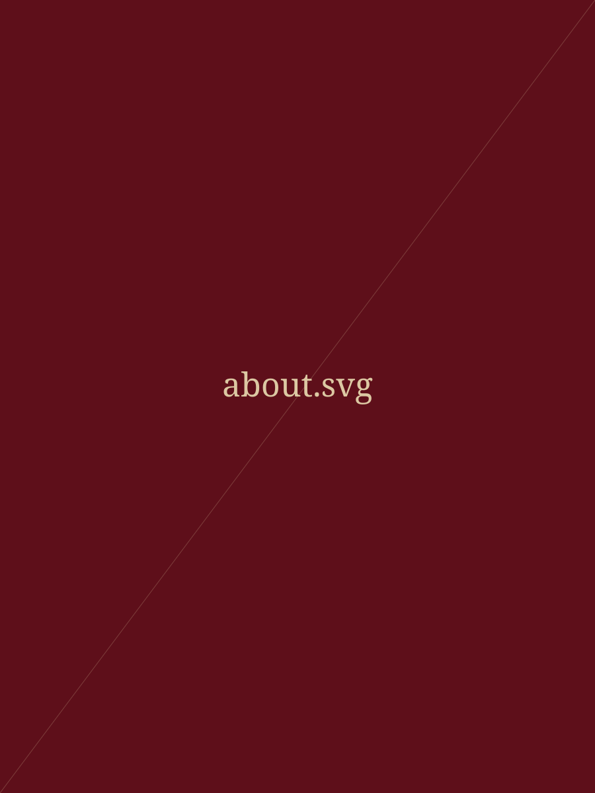

Fotografia de eventos
Cobertura de eventos com atenção aos detalhes e aos instantes entre as cerimônias. [Texto editável]

Dois olhares para um só instante.
Explorar o portfólio ↓Cobertura de eventos com atenção aos detalhes e aos instantes entre as cerimônias. [Texto editável]
Sessões individuais, de casal ou família, em estúdio ou ao ar livre. [Texto editável]
Registro do dia inteiro, do preparo à festa. [Texto editável]
Retratos naturais, pessoais e profissionais. [Texto editável]
Imagens para marcas, produtos e equipes. [Texto editável]

A Duo Studios transforma momentos em registros visuais significativos.
A Duo Studios é conduzida por Mariana e Gaby, em parceria. As duas são da igreja, e parte do portfólio registra cultos e encontros da comunidade. [Texto editável: complete com a história e o jeito de trabalhar do estúdio.]
Dois olhares para um só instante.
Explorar o portfólio ↓Cobertura de eventos com atenção aos detalhes e aos instantes entre as cerimônias. [Texto editável]
Sessões individuais, de casal ou família, em estúdio ou ao ar livre. [Texto editável]
Registro do dia inteiro, do preparo à festa. [Texto editável]
Retratos naturais, pessoais e profissionais. [Texto editável]
Imagens para marcas, produtos e equipes. [Texto editável]
A Duo Studios transforma momentos em registros visuais significativos.
A Duo Studios é conduzida por Mariana e Gaby, em parceria. As duas são da igreja, e parte do portfólio registra cultos e encontros da comunidade. [Texto editável: complete com a história e o jeito de trabalhar do estúdio.]